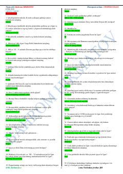

JTJahon tarixi bo'yicha 2000 ta savol va javobdan iborat o'quv qo'llanma.
Ushbu kitob jahon tarixi bo'yicha 2000 ta savol va javobni o'z ichiga olgan o'quv qo'llanmadir. Unda qadimgi dunyo sivilizatsiyalari, buyuk imperiyalar va tarixiy shaxslar haqidagi ma'lumotlar test shaklida taqdim etilgan.